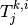
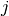

Notations¶
A notation conversion table¶
| arboris-python | stramigioli icra2001 | duindam 2006 | murray, li & sastry | KDL (cf frames.hpp) | |
|---|---|---|---|---|---|
 |
F_A_B | ||||
|  (p24) | T | twist of  with respect to  expressed in expressed in  |
|||
| body twist | |||||
| W R V_A | “world” twist wrench rotation vector expressed in A | ||||
| documentation | latex | sourcecode |
|---|---|---|
| \H_{ij} | H_ij | |
| \Ad_{ij} | Ad_ij | |
| \twist[j]_{j/i} | T_ji | |
| \J[j]_{j/i} | J_ji | |
| \dJ[j]_{j/i} | dJ_ji |
Some formulas¶
How KDL works¶
- Twist class::
- twist.rot twist.vel
- Wrench class::
- wrench.force wrench.forque
twist(i) returns hcat(vel, rot)[i] and wrench(i) returns hcat(force, torque)[i]
a frame object contains a rotation matrix and an origin vector . The * is overload, in order to works as expected with vectors points, twists, wrenches and other frames.